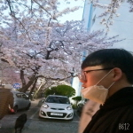

문서 by GEON
우리가남이가
모임의 목적
6명 전원이 분포고등학교를 졸업하고 성인이 되서 만든 친목회라고 할 수 있다. 처음에는 정재욱 박건우 남현민 이렇게 셋이서 저녁을 가끔 먹고는 했는데, 어떻게 한명 한명씩 모이다보니 6명이 되었다. 별거 하지는 않고 가끔만나서 밥먹거나 술먹거나 여행가거나 한다. 남현민은 현재 공군에서 군복무 중이고 나머지는 다 복무를 마친 상태이다.
박건우
매우 강하고 치명적이고 섬뜩한 남자. 하지만 가슴속은 이타적인 마음과 남을 위한 봉사와 배려로 가득찬 인물.
남현민
박사과정에 있다.

정재욱
부경대를 졸업했다. 강아지 이름은 "시나" 키 160 몸무게 40kg 이다.
정재훈
부경대를 졸업했다. 롤을 좋아한다.

이채영
동명대를 졸업했다. 여자친구가 있다. 노는걸 좋아한다.
고대혁
소방관이다. 여자친구는 아나운서다.